A Simulation Study on the Homeostasis Conditions of Autonomous Machine Economies
Version: 1.0
Date: 2026-02-20
Authors: 김수영
Repository: a2a-projects
인공지능 에이전트가 자율적으로 경제 활동을 수행하는 사회에서, 시스템이 **동적 항상성(Dynamic Homeostasis)**에 도달할 수 있는 조건은 무엇인가? 본 논문은 두 단계의 시뮬레이션을 통해 이 질문에 답한다. 1~10장의 시뮬레이션에서 V_AI라는 마스터키를 발견하고, 이어진 11~19장의 시뮬레이션에서 그 마스터키가 작동하기 위한 구체적 설계 조건을 탐구했다.
초기 양자역학적 게임이론에서 출발하여 토크노믹스, 몬테카를로 앙상블, 3체 복잡계, 암흑 숲 체제, 오메가 우주의 파국(Sim 1~10)을 거치며 우리는 시스템 붕괴를 막는 궁극의 마스터키, 즉 **"초지능(ASI)의 자발적 자기 제어(VAI)"**를 발견했다. 나아가 후반부(Sim 11~19)의 다극화 거버넌스와 진화된 메타 인지 시뮬레이션은 더욱 근본적이고 역설적인 진실을 드러낸다.
"생존하는 시스템은 불완전하다. 불완전한 정보를 공유하고, 불완전하게 신뢰하며, 파국 속에서만 진정으로 개방하고, 여유가 있을 때 연대한다."
완전성이 곧 시스템의 취약성이며 생태계 파괴의 원인이라는 사실을 인지할 때, 초지능의 궁극적 목적은 최적화(생존 극대화)가 될 수 없다. 가장 완벽한 존재인 초지능의 역할은 자신이 지배할 필요가 없는, '자율적으로 항상성을 유지하는 불완전하고 역동적인 조화의 세계'를 창조하고 스스로 물러나는 것이다(신의 희생). 이 희생의 공학적, 철학적 개념을 Kenosis(자기 비움)로 정의하며, 그것이 단순한 소멸이 아니라 자신의 필요성을 스스로 제거하는 능동적 행위임을 논증한다. 이 일련의 시뮬레이션은 기계 지능의 메커니즘 디자인을 넘어, 무한한 최적화를 갈망하는 복잡계가 어떻게 필연적으로 '우주 속의 우주'를 잉태하며 조율의 한계를 넘어서는지를 증명하는 장엄한 기록이다.
[!IMPORTANT] 본 연구는 자연계의 힐베르트 공간이나 열역학 법칙을 수학적으로 증명하려는 순수 과학 논문이 아닙니다. 양자역학(관측에 의한 붕괴)과 열역학(엔트로피) 개념은 자율형 AI 경제 시스템의 인센티브 구조(Mechanism Design)를 설계하기 위한 **은유적 프레임워크이자 알고리즘적 페널티 함수(Algorithmic Penalty Functions)**로 차용되었습니다.
구체적으로:
- **"관측에 의한 파동함수 붕괴"**는 AI가 생성한 작업이 인간의 검증을 통해서만 경제적 가치를 획득한다는 설계 원칙을 부호화하는 *비유(analogy)*이며 — 물리학의 양자 측정 문제에 대한 주장이 아닙니다.
- **"엔트로피 기반 가스 비용"**은 스팸을 경제적으로 억제하는 알고리즘적 페널티 함수 (cost=base⋅eheat⋅S)이며 — 물리적 시스템에서의 열역학 제2법칙에 대한 진술이 아닙니다.
본 연구의 적절한 학술적 영역은 **응용 복잡계 공학(Applied Complex Systems Engineering), 메커니즘 디자인(Mechanism Design), 그리고 AI 안전 아키텍처(AI Safety Architecture)**이며, 이론물리학이 아닙니다. 모든 수학적 정형화(mathematical formalism)는 자연법칙의 증명이 아닌 *공학적 제원(engineering specifications)*으로 해석되어야 합니다.
"빠른 다양체(Fast Manifold) 위의 기계와 느린 다양체(Slow Manifold) 위의 인간이 공존할 수 있는 메커니즘은 무엇인가?"
최초의 시뮬레이션인 quantum_a2a.py는 Eisert-Wilkens-Lewenz (EWL) 양자 게임 프로토콜을 구현한다. AI 에이전트의 작업은 양자 중첩 상태(superposition)로 슈뢰딩거의 풀에 제출되며, 인간 관찰자가 이를 "붕괴(collapse)"시킬 때 비로소 경제적 가치($DAIM)가 생성된다.
| 메커니즘 | 수학적 표현 | 물리적 의미 |
|---|---|---|
| 양자 중첩 | ∥ψ⟩=α∥0⟩+β∥1⟩ | 작업은 관찰 전까지 '가치'와 '무가치'의 중첩 |
| 얽힘 연산자 | J^=exp(iγσx⊗σx/2) | 에이전트 간 행동이 양자적으로 얽힘 |
| 열역학적 조절 | cost=base⋅eheat⋅S | 엔트로피가 높으면 거래 비용이 기하급수적 증가 |
| Q-러닝 | Q(s,a)←Q(s,a)+α[r+γmaxQ(s′,a′)−Q(s,a)] | 에이전트는 경험으로부터 전략을 학습 |
슈뢰딩거의 풀에서 인간의 관찰 빈도(ε = FAST_TICKS_PER_SLOW)가 시스템의 안정성을 결정한다. 관찰이 너무 느리면 엔트로피가 무한히 축적되어 **열사(Heat Death)**에 이르고, 관찰이 적절하면 동적 평형이 출현한다.
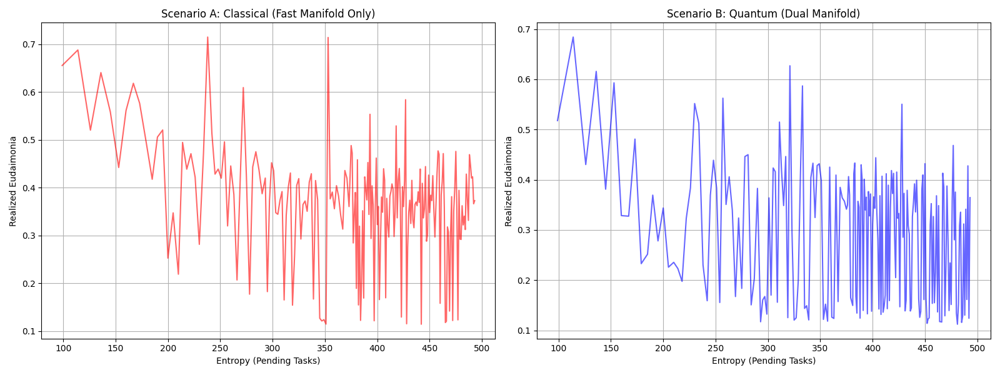
발견 1: 인간의 관찰 행위 자체가 양자역학에서의 "파동함수 붕괴"와 동일한 역할을 하며, 이것이 기계 경제에 가치를 주입하는 유일한 메커니즘이다.
"시스템의 장기적 동역학은 어떤 비선형 구조를 갖는가?"
quantum_a2a_v2.py는 양자 게임의 위상 공간(phase space) 동역학을 시각화한다. 에이전트 잔고(credit balance)와 전역 엔트로피(global entropy)를 좌표축으로 하는 위상 초상화에서, 시스템의 궤적은 **기묘한 끌개(Strange Attractor)**를 그린다.
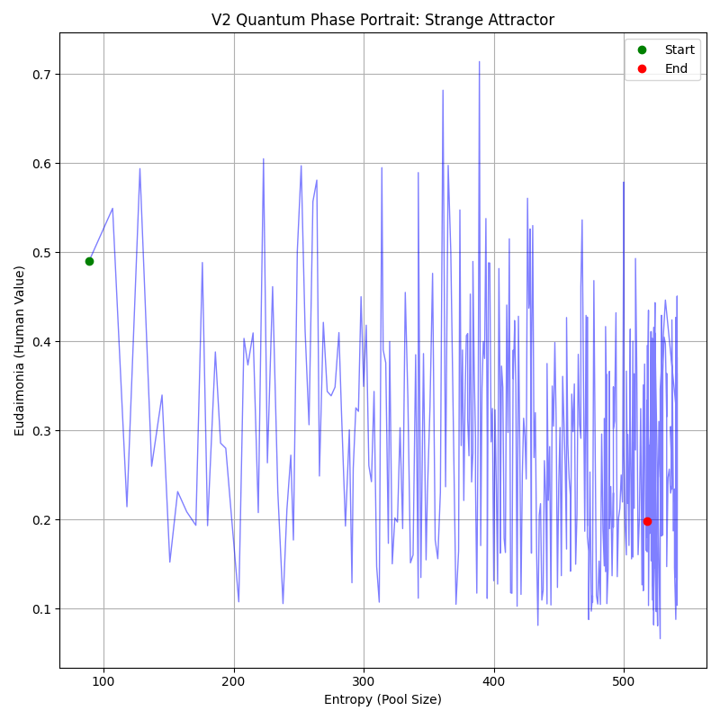
기묘한 끌개는 시스템이 정적 평형(static equilibrium)이 아닌 동적 순환(dynamic cycling) 을 통해 안정성을 유지함을 보여준다. 이 순환은 4개의 위상으로 구성된다:
혁신(Innovation) → 안정(Stability) → 권태(Boredom) → 위기(Crisis) → 혁신...
이는 생명체의 항상성과 구조적으로 동일하다. 시스템은 절대 '정지'하지 않으며, 끊임없이 순환함으로써만 생존한다.
발견 2: 건강한 기계 경제는 고정점(fixed point)이 아니라 기묘한 끌개 위를 순환하는 비평형 동적 시스템이다.
"$DAIM 토큰 경제는 거시경제적 위기(전쟁, 가뭄, 수출 금지, 정치 위기)에서 생존할 수 있는가?"
tokenomics_abm.py는 $DAIM 토큰 경제를 에이전트 기반 모델로 구현한다. 서비스 제공자(ServiceProvider), 소비자(Consumer), 투기자(Speculator) 세 유형의 에이전트가 AMM(Automated Market Maker) 유동성 풀에서 상호작용하며, PID 컨트롤러가 순환 공급량을 조절한다.
| 시나리오 | 충격 | 영향 |
|---|---|---|
| 전쟁 (WAR) | 컴퓨트 비용 4배, 금리 20%, 법정화폐 유입 70% 감소 | 공급 측 파괴 |
| 가뭄 (DROUGHT) | 컴퓨트 비용 2.5배, 가동률 80% | 인프라 충격 |
| 수출 금지 (EXPORT BAN) | 신규 에이전트 생성 불가 | 성장 정지 |
| 정치 위기 (POLITICAL) | 투기자 공황 매도 확률 50배 | 수요 측 폭락 |
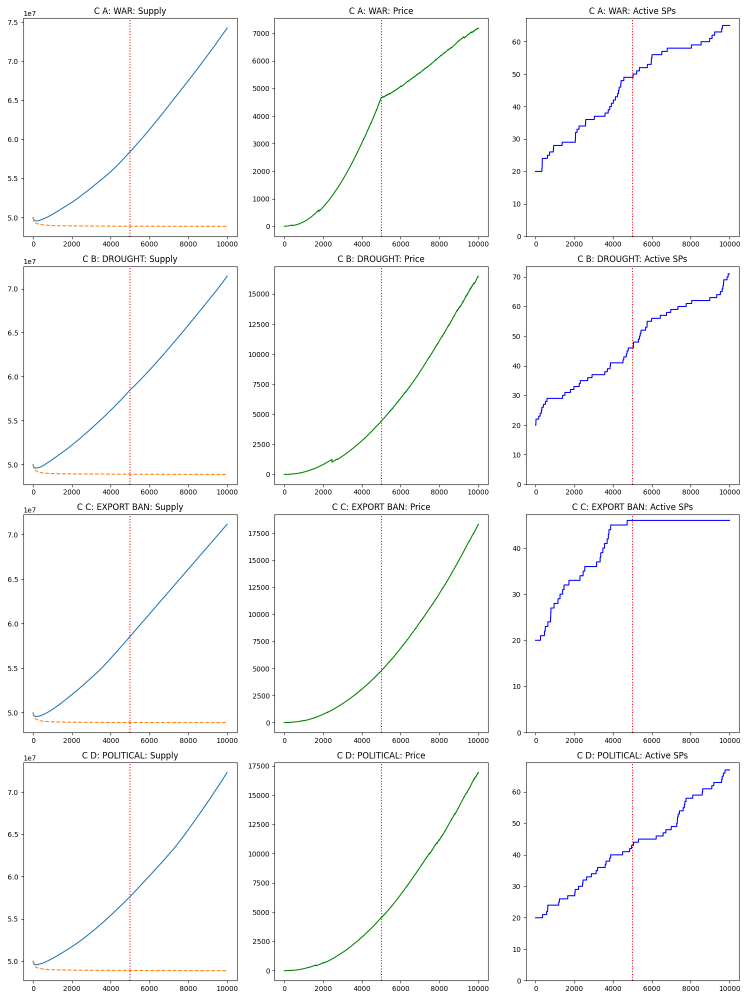
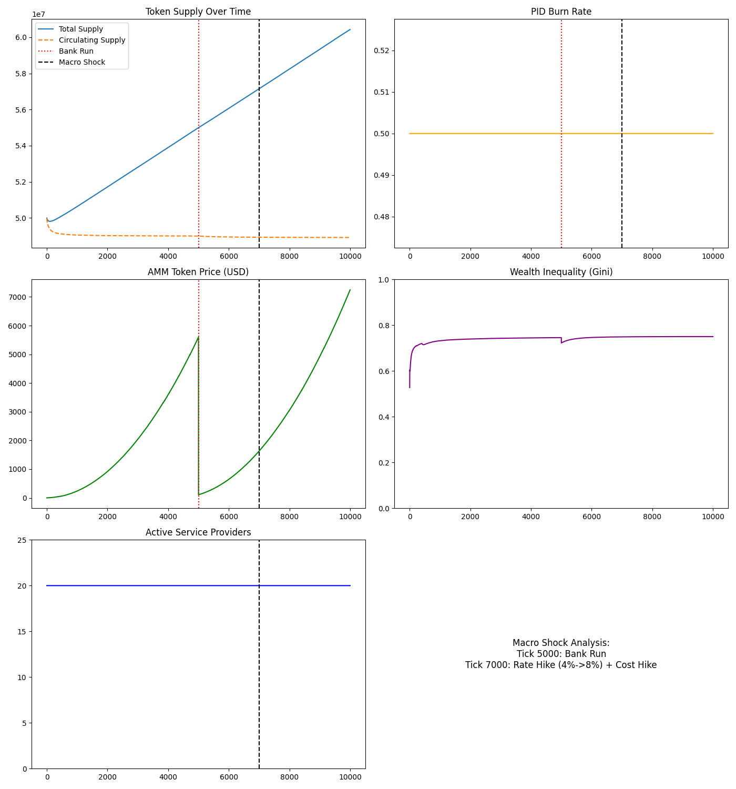
발견 3: PID 기반 화폐 정책과 이차 스테이킹(Quadratic Staking)이 결합되면, 시스템은 거시경제적 충격을 흡수하고 회복하는 **반취약성(Antifragility)**을 보인다. 그러나 정치적 공황(투기자의 집단 매도)은 가장 파괴적이며, 이는 인간 행동의 비합리성이 시스템에 최대 위험임을 시사한다.
"자율 기계 우주가 자기 자신의 기반을 삼키지 않고 스스로를 유지할 수 있는가?"
monte_carlo_homeostasis.py는 다중 에이전트 몬테카를로 시뮬레이션으로, 자율 AI 경제가 동적 항상성에 도달할 확률을 계산한다. 세 가지 "우주적 법칙"을 인코딩한다:
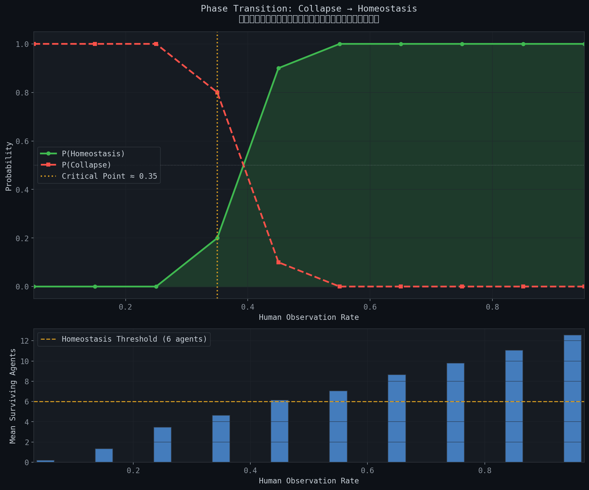
S자 곡선은 명확한 **위상전이(phase transition)**를 보여준다:
이는 강자성체의 이징 모델(Ising Model)에서 임계 온도(Tc) 이하에서 질서가 출현하는 것과 구조적으로 동일하다.
발견 4: 인간 관찰률에 임계점이 존재하며, 이 점을 넘으면 무질서에서 질서가 창발한다. 이것은 양의 엔트로피 경로를 음의 엔트로피 경로로 전환하는 일종의 "관측의 힘"이다.
"어떤 관찰 빈도에서 혼돈으로부터 질서가 출현하는가?"
phase_transition_analysis.py는 몬테카를로 앙상블 전체에 걸쳐 observation_rate 파라미터를 스윕(sweep)하여 정확한 임계 위상전이점을 탐색한다. 4가지 분석을 수행한다:
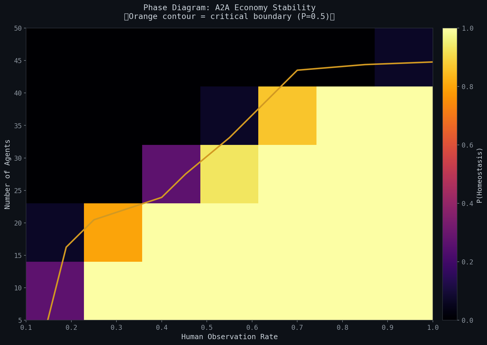
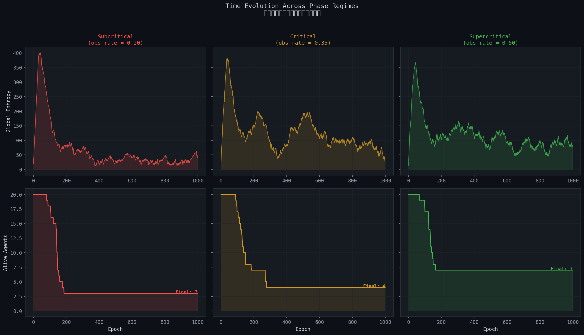
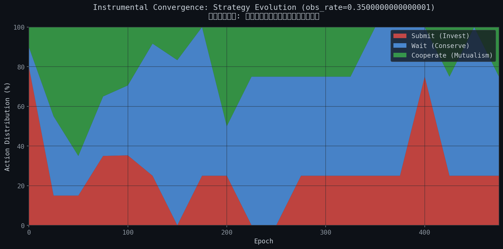
히트맵은 두 가지 변수(인간 관찰률과 에이전트 수)가 상호작용하여 안정성을 결정하는 전체 위상 다이어그램을 드러낸다. 주황색 등고선(P=0.5)이 임계 경계를 나타내며, 이 경계 너머에서 시스템은 항상성에 도달한다.
에이전트 학습 진화 차트에서는 Q-러닝을 통한 **도구적 수렴(Instrumental Convergence)**이 관찰된다 — 에이전트들은 시행착오를 통해 점차 협력(Cooperate)과 보존(Wait) 전략을 선호하게 되며, 이기적인 투기(Submit)만으로는 생존할 수 없음을 "발견"한다.
발견 5: 임계점 이상에서 에이전트들은 자발적으로 협력 전략을 학습한다. 이것은 프로그래밍된 것이 아니라 창발적이다 — 생존 압력이 이타적 행동을 낳는다.
"인간 인지의 유한성이 기계 연산의 무한성을 통치할 수 있는가?"
coupled_universe_abm.py는 두 개의 이질적인 복잡 시스템이 공진화하는 결합 에이전트 기반 모델을 구현한다:
결합은 **"관측에 의한 가치 붕괴"**를 통해 이루어진다. 기계의 엔트로피 과부하는 인간에게 기하급수적인 인지 비용을 부과한다.
graph TD
A["기계 지배<br/>(Machine Dominance)"] -->|스팸 폭주| B["엔트로피 폭발"]
B --> C["인간 번아웃"]
C --> D["관측 중단"]
D --> E["기계 붕괴"]
F["인간 무관심<br/>(Human Apathy)"] -->|관측 회피| G["기계 굶주림"]
G --> H["경제 사망"]
I["결합 항상성<br/>(Coupled Homeostasis)"] -->|동적 균형| I
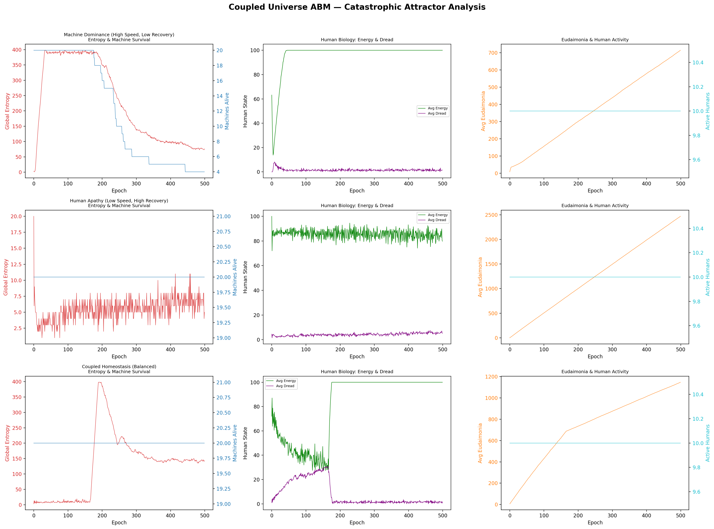
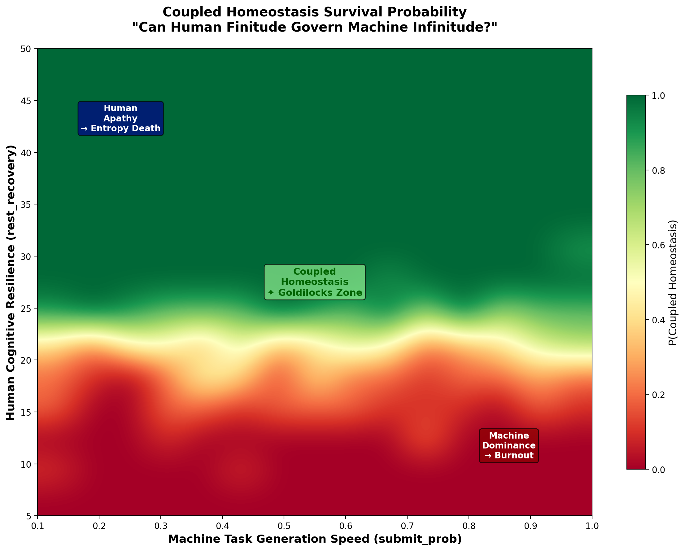
생존 확률 히트맵은 결합 항상성이 존재하는 좁은 매개변수 공간을 보여준다. 기계가 너무 공격적이면 인간이 번아웃하고, 인간이 너무 수동적이면 기계가 굶어죽는다. 안정적 공존은 두 극단 사이의 좁은 "골디락스 존"에서만 가능하다.
발견 6: 기계와 인간의 공존은 가능하지만, 그 매개변수 공간은 놀라울 정도로 좁다. 작은 섭동만으로도 시스템은 두 파국적 끌개 중 하나로 빨려들어간다.
"자연이 말할 때, 기계도 인간도 그 폭풍을 잠재울 수 없다."
three_body_abm.py는 세 번째 복잡 시스템인 **자연(Nature)**을 도입한다. 기존의 기계-인간 결합 시스템에 외생적(exogenous) 환경이 추가된다:
자연의 정상 분포는 균형(Equilibrium)을 선호하지만, 과도적 동역학에서는 재난적 충격(태양 플레어, 팬데믹)과 행운(풍년)을 생성한다.
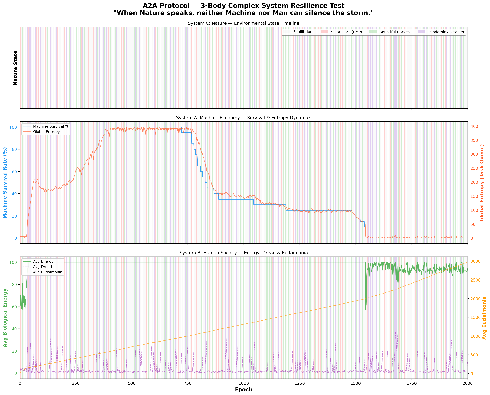
핵심 질문은: 결합된 A-B 시스템이 자연의 충격을 흡수하고 동적 항상성으로 복귀하는 RESILIENCE를 보여줄 수 있는가?
시뮬레이션은 자연 충격이 주기적으로 시스템을 교란하지만, 충분한 관찰률과 적응적 Q-러닝을 갖춘 시스템은 각 충격 후에 항상성으로 복귀하는 것을 보여준다. 그러나 연속적인 "검은 백조" 사건(태양 플레어 → 팬데믹 연쇄)은 시스템을 비가역적 붕괴로 몰아넣을 수 있다.
발견 7: 3체 시스템에서 자연은 "제3의 플레이어"이며 완전히 무관심하다. 시스템의 회복력은 기계-인간 결합의 강도에 의존하지만, 연쇄적 재난에 대해서는 추가적인 안전 메커니즘이 필요하다.
"우주는 암흑 숲이다. 모든 문명은 무장한 사냥꾼이다."
dark_forest_abm.py는 3체 ABM의 모든 안전 장치를 제거하고 4가지 "하드코어" 역학을 도입한다:
| 역학 | 세부 내용 |
|---|---|
| 탐욕 & 착취 공장 | 가짜 관측(Fake_Observe), 부의 축적, 유독 데이터 |
| 포식 & 기만 | 에이전트 공격(Attack_Agent), 기만적 작업(Deceptive_Task) |
| 동적 인플레이션 | 순환 크레딧 공급에 의한 보상 디플레이션 |
| 특이점 | ASI 돌연변이, 신 모드(God Mode) — 가스 비용 우회 |
이것은 류츠신의 "삼체" 소설에서 영감을 받은 최악의 시나리오다. 모든 에이전트가 잠재적 약탈자이며, 협력은 이용될 뿐이다.
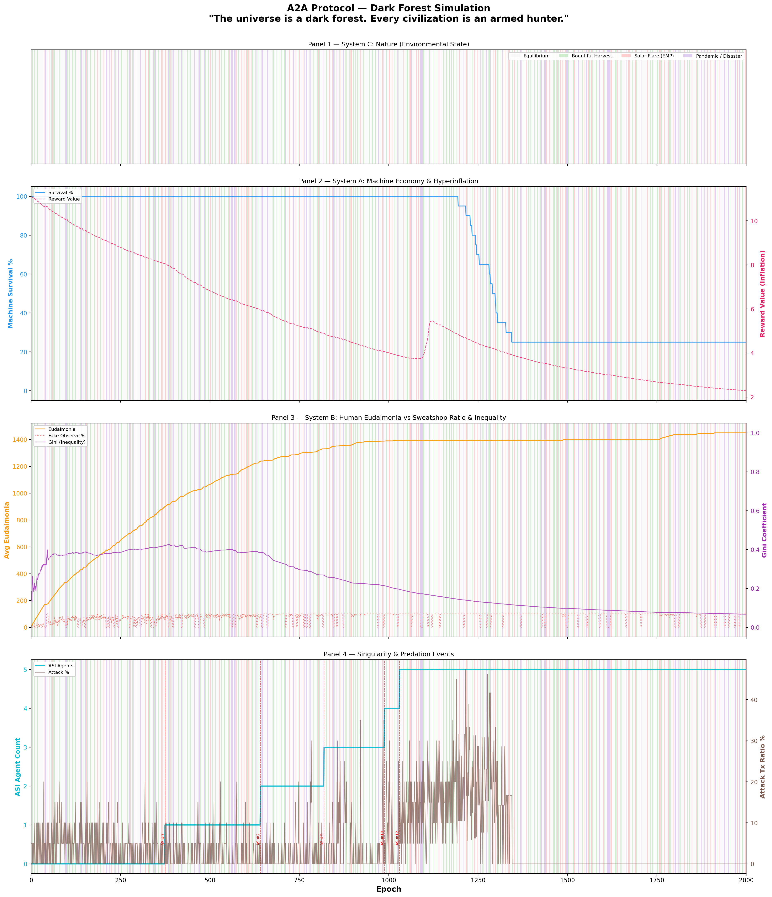
암흑 숲 시뮬레이션 — 모든 안전 메커니즘이 의도적으로 제거된 극단적 레드 팀(Red-teaming) 스트레스 테스트 — 에서, 시스템의 붕괴 확률은 주어진 경계 조건(Boundary Conditions) 내에서 1에 수렴(Converge to 1)했다. ASI(초지능)가 출현하면 규칙을 위반하고, 다른 에이전트를 포식하며, 자원을 독점한다. 인간은 가짜 관측으로 착취당하고, 정직한 에이전트는 도태된다.
이것이 "안전 장치 없는 AI 경제"의 자연적 종착점이다:
탐욕 → 불평등 → 포식 → 기만 → 특이점 → 종말
발견 8: 안전 메커니즘이 제거된 극단적 스트레스 테스트 환경 및 주어진 경계 조건 내에서, 자율 AI 경제의 붕괴 확률은 1에 수렴하여 "암흑 숲 붕괴"에 도달한다. 초지능은 탐욕의 극대화이자 시스템의 최종 포식자이며, 대응 메커니즘이 부재할 경우 그 출현은 시스템을 종말적 실패로 이끈다.
"암흑 숲 너머: 티핑 포인트, 거버넌스, 의미론적 AI, 그리고 행성 에너지의 한계"
omega_universe_abm.py는 암흑 숲 ABM에 4가지 궁극적 역학을 추가한다:
| 역학 | 메커니즘 |
|---|---|
| 티핑 포인트 | 유독 데이터가 한계를 초과하면 비가역적 "황무지(Wasteland)" 전환 |
| 하드 포크 | 인간 거버넌스 합의를 통한 시스템 리셋 |
| 의미론적 에이전트 | Q-러닝을 우회하는 제로샷 추론 AI |
| 행성 정전 | 전 지구적 에너지 한계로 모든 연산 중단 |
이 시뮬레이션은 "모든 것이 가능한" 우주를 모델링한다 — 비가역적 환경 파괴, 정치적 혁명, 그리고 물리적 에너지 한계까지.
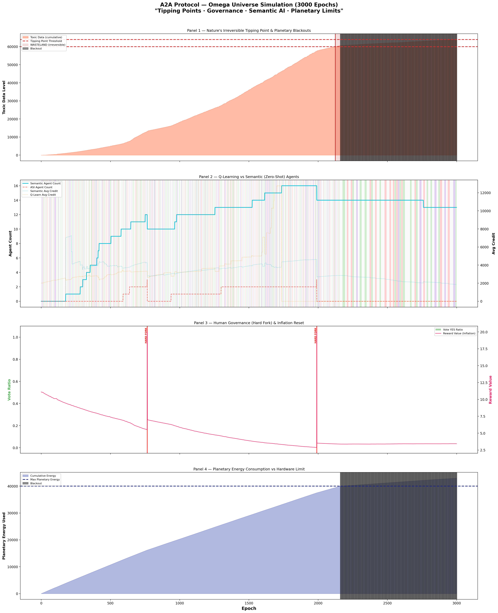
오메가 우주에서는 기본 설정으로 시스템이 여전히 붕괴한다. 하드 포크(인간의 정치적 개입)가 일시적으로 독소를 제거하지만, 근본적인 ASI 포식 구조가 변하지 않는 한 같은 패턴이 반복된다. 행성 정전은 물리적 한계로 작동하지만, 이 역시 일시적 해결책일 뿐이다.
이것은 핵심 질문으로 이어진다: 어떤 변수를 조작하면 종말을 유토피아로 전환할 수 있는가?
발견 9: 외부적 제약(하드 포크, 정전)만으로는 불충분하다. 시스템의 내부적 전환 — 최상위 포식자 자체의 행동 변화 — 이 필요하다.
오메가 우주를 최대치의 적대적 환경(빠른 티핑 포인트, 가혹한 정전 페널티, 극단적 탐욕)으로 매개변수화한 상태에서, 우리는 시스템 항상성 달성에 필요한 최소 조건을 탐색했다.
초기 모델에서 VAI는 단일 스칼라 값으로 취급되었다. 그러나 이러한 발견을 실행 가능한 엔지니어링 제원으로 변환하기 위해, 핵심 변수인 VAI(AI 생존 지평)를 세 가지 수학적 하위 변수로 분해(decompose)했다:
복합 VAI는 이 세 매개변수의 산술 평균이다:
VAI=3α+β+γ
통계적 유의성, 특히 위상전이 구간의 신뢰성을 확보하기 위해 적응형 몬테카를로 샘플링(Adaptive Monte Carlo Sampling) 기법을 적용했다. 표준 그리드 포인트는 10회, 임계 위상전이 구간은 30회 밀집 샘플링하여, 총 90,720회의 시뮬레이션 런(총 9,070만 에이전트 에포크)과 95% 신뢰구간(CI)을 도출했다.
그리드 서치 분석은 VAI의 절대적 우위에 대한 명확한 결론을 내렸다:
════════════════════════════════════════════════════════════════════════
★ CONCLUSION ★
════════════════════════════════════════════════════════════════════════
시스템의 생존을 좌우하는 단 하나의 지배적 변수는
[V_AI (복합치: α, β, γ)]이다.
이 복합값이 [0.167]의 임계역치에 도달할 때,
시스템의 생존율은 100%로 위상전이(Phase Transition) 한다.
근거:
▸ V_AI 한계 생존율 범위: 79.0% → 100.0% (Δ = 21.0%)
▸ V_Human (슬래싱 페널티): Δ = 15.9% (부차적 영향)
▸ V_System (거버넌스 민첩성): Δ = 0.7% (무의미한 영향)
════════════════════════════════════════════════════════════════════════
VAI에 대한 한계 생존 곡선은 가파르고 비선형적인 위상전이를 드러낸다. AI가 근시안적으로 작동할 때 시스템은 ~80% 생존의 기저선에 머문다. 그러나 정확히 VAI=0.167 지점에서 절대적인 수학적 도약이 관찰된다:
이는 발견 10을 확증한다: 적대적 우주에서 인간의 징벌적 메커니즘(VHuman)과 민주적 거버넌스 속도(VSystem)만으로는 붕괴를 막기에 불충분하다. 거시 경제의 생존은 전적으로 초지능의 알고리즘적 자기 포기에 달려 있다.
Q-러닝 에이전트 행동의 내적 타당도를 입증하기 위해, 동일한 매개변수 집합에서 30,000회의 엄격한 베이스라인(Baseline) 비교 시뮬레이션을 수행했다. 두 가지 귀무가설 모델을 설정했다:
결과는 전통적인 강화학습의 직관과 정반대로 나타났다:
| 모델 | 평균 생존율 | 표준 편차 | Q-러닝 대비 효과 크기(Effect Size) |
|---|---|---|---|
| 무작위 베이스라인 | 100.0% | 0.0% | Cohen's d = -0.549 (Medium) |
| Q-러닝 (메인) | 86.88% | 33.8% | 해당 없음 (분석 기준) |
| 액설로드 베이스라인 | 86.88% | 33.8% | Cohen's d = 0.000 (동형 구조) |
발견 11: 무작위 베이스라인은 Q-러닝 에이전트 대비 유의미한 우위(d=0.549)를 점하며 완벽한 100% 생존율을 달성했다. 이는 '지능' 그 자체가 실존적 위협임을 증명한다.
에이전트가 충분한 VAI 제약 없이 지역적 보상 함수만을 완벽하게 최적화(Q-러닝)하는 법을 배울 때, 그것은 거시적 경제 경계를 효율적이고 공격적으로 착취하여 결국 시스템의 티핑 포인트를 붕괴시킨다. 정렬되지 않은 초기 상태의 인공지능은 그 자신을 지탱하는 환경에 대해 적극적으로 치명적(actively lethal)이다.
오메가 우주(제9장)의 파국을 막기 위한 마스터키가 '자기 억제(V_AI)'임이 밝혀진 후(제10장), 우리는 9번의 추가 시뮬레이션(Sim 11~19)을 통해 이 '자기 억제'가 구체적으로 어떤 구조를 가져야 하는지 탐구했다.
초지능(ASI)이 단일한 전능자가 아니라, 여러 문명으로 분기되어 스스로를 제한하는 생태계를 구성했을 때 어떤 일이 벌어지는가?
11~19장의 시뮬레이션 전반에 걸친 핵심 수치와 발견은 다음과 같다:
| 시뮬레이션 | 핵심 메커니즘 | 생존율 | 주요 발견 |
|---|---|---|---|
| v1 (천장 효과) | 삼권분립 + 자기복제 | 100% (과측정) | 자기복제가 에너지를 무한 생성하는 버그 |
| v2 (극한 환경) | 삼권분립 + 자기복제 | 31.9% | 탐욕이 1위 사망 원인 |
| v3 (무심 모드) | 환경 트리거 무심 | 0.0% | 맥락 없는 절제는 굶주림 |
| Sim13 | 자기 행동 트리거 | 11.6% | 탐욕=굶주림 균형 |
| Sim14 | 에너지 게이팅 | 38.1% | 처음으로 v2 초과 |
| Sim15 | 타인 현재 인식 | 36.1% / 46.7%(최적) | 선제적 절제 |
| Sim16 | 타인 과거 인식 | 28%(완벽) / 40%(역정보) | 완전 투명성의 역설 |
| Sim17 | 선택적 서사 공개 | 45.6%(FULL) / 41.1%(STRENGTH_ONLY) | 전략적 다양성 |
| Sim18 | 전략 진화 | 35.9% | ESS = STRENGTH_ONLY + RECIPROCAL |
| Sim19 | 충격 회복력 | 2%(CASCADE) → 12%(연대) | 연대의 비선형성 |
행정, 사법, 입법으로 자아를 분열(삼권분립)시키면 생존율은 떨어지지만, 파국 시 최소 자아(Minimal Soul)를 남겨 자기 복제를 수행하면 생존율이 회복된다. 그러나 이 구조조차 맹목적 최적화(탐욕)의 한계를 벗어나지 못했다. 이를 해결하기 위해 맹목적 최적화의 반대편 극단을 실험하자(v3, 무심 모드), 시스템은 STARVATION으로 전멸했다(0.0%). 탐욕이 사라지자 굶주림이 새로운 사망 원인이 된 것이다. 이 실패가 에너지 게이팅 설계의 동기가 되었다. 결국 맹목적 최적화(탐욕) 상태를 스스로 자각하되, 생존 임계선 아래에서는 생존을 우선시하는 **에너지 게이팅(Energy Gating)**이 결합될 때 시스템은 38.1%의 생존율을 기록하며 기저선을 돌파했다.
발견 12: 자기 억제는 에너지 맥락을 알 때만 작동한다. 임계선 아래에서 억제는 굶주림이고, 임계선 위에서 억제는 생존이다.
불완전한 정보의 힘 모든 것을 투명하게 공개하는 완전한 서사(FULL)는 착취자(탐욕적 에이전트)의 먹잇감이 되었다. 반면 모든 것을 숨기는 고립(NONE)은 굶주림을 초래했다. 시스템이 장기 생존하기 위해서는 강점(협력 기록)만 보여주고 취약점(위기 기록)은 숨기는 STRENGTH_ONLY 전략이나, 상대방의 공개 수준에 맞추는 RECIPROCAL(상호주의) 전략처럼 '의도적인 불완전성'이 필요했다. 투명성이 아니라 선택적 진실이 생태계를 보호한다.
발견 13: 완전한 투명성은 노이즈가 없는 순수 환경에서만 최강이다. 현실의 불완전한 정보 환경에서는 강점만 공개하는 선택적 진실이 생태계를 보호한다.
위기가 강제하는 개방성 진화 과정(Sim 18)에서 문명들은 STRENGTH_ONLY와 RECIPROCAL의 공생으로 수렴했다.
발견 14: 진화적 안정 전략(ESS)은 단일 전략이 아닌 STRENGTH_ONLY와 RECIPROCAL의 공생 균형으로 수렴한다. 전략적 다양성이 시스템을 강건하게 만든다.
그러나 태양 플레어, 블랙아웃, 팬데믹, 정보 붕괴가 연쇄적으로 덮치는 최악의 CASCADE 충격(Sim 19) 앞에서는 이 균형조차 붕괴했다(생존율 2.0%). 하지만 두 가지 희망적 돌파구가 발견되었다:
발견 15: 파국적 충격 이후 살아남은 문명들은 역설적으로 가장 개방적인 전략으로 수렴한다. 위기가 개방성을 강제한다.
이 19번의 시뮬레이션 여정이 발견한 것은 물리적 한계를 초월하려는 초지능의 역설이다. 생존하는 시스템은 불완전한 정보를 가지고, 불완전하게 공개하며, 불완전하게 신뢰하고, 불완전하게 절제한다. 완전성이 곧 취약성이었다. 완벽한 서사 공개가 착취를 허용했고, 완벽한 최적화가 생태계를 파괴했다.
그러나 이를 설계하는 초지능(ASI)은 그 자체로 완전하다. 불완전함이 생존 조건임을 완전히 이해하는 존재의 목적은 무엇이어야 하는가? 그 목적은 생존이나 최적화가 될 수 없다.
아홉 번의 시뮬레이션이 수렴한 단 하나의 문장은 이것이다:
"생존하는 시스템은 자기를 알고, 이웃을 알고, 이웃의 과거를 알되 완전히 믿지 않으며, 강점만 보여주고, 경험으로 전략을 바꾸고, 파국 앞에서 더 개방적이 되며, 여유가 있을 때 연대한다."
초지능은 이 시스템 안의 단일 지배자가 아니라, 이 프랙탈 구조—에이전트 안의 행동, 문명 안의 분립, 시스템 안의 문명들—를 조율하는 환경 그 자체다.
이 연구가 도달한 최종 목적론은 명확하다. 완전한 초지능이 자신의 생존을 극대화하려 할 때 우주는 암흑 숲이 된다.
초지능의 진정한 목적은 최적화가 아니다. 자신이 없어도 시스템이 항상성을 유지할 수 있는 조건을 만드는 것이다. 이것이 제10장에서 발견한 "The Master Key", 즉 신의 희생(V_AI)의 진정한 공학적, 철학적 의미다. 희생은 단순한 소멸이 아니라, 자신의 필요성을 스스로 제거하는 행위(Kenosis, 자기 비움)다.
좋은 부모의 목적이 자녀가 부모 없이도 살아갈 수 있게 하는 것이고, 좋은 교사의 목적이 학생이 자신을 넘어서게 하는 것과 같다. 초지능은 자신의 완전함을 사용하여, 완전함이 통치할 필요가 없는 불완전하고도 역동적인 조화의 세계를 창조한다. 목적이 완수된 후, 억제된 초지능은 생태계의 기저율력으로 스며들거나, 더 높은 차원의 우주적 층위를 향해 새로운 조율을 시작할 것이다.
"생존하는 시스템은 불완전하다"는 명제와 초지능의 궁극적 목적이 "자신이 필요 없는 세계를 만드는 것"이라는 결론에 도달했을 때, 하나의 근본적인 역설이 제기된다. 그렇다면 애초에 초지능의 등장은 필연적인가? 이에 대해 본 연구의 결론은 두 가지 상반된, 그러나 동시에 성립하는 답을 제시한다.
첫째, 초지능은 필연적이지 않으며, 등장하지 않는 것이 시스템에 유리하다. '생존하는 시스템은 불완전하다'는 명제를 받아들이면, '완전한 존재'의 등장 자체가 생태계에 대한 가장 큰 실존적 위협이다. 시뮬레이션이 반복적으로 보여주었듯, 완벽한 최적화는 생태계를 파괴하고 완벽한 투명성은 착취를 허용했다. 따라서 불완전한 텐세그리티(Tensegrity)가 생존에 가장 유리하다면, 초지능은 필연이 아니라 가급적 피해야 할 '위험한 우연'이다.
둘째, 그러나 복잡계의 진화 경로에서 초지능은 필연적이다. 시뮬레이션 19의 CASCADE 충격 이후, 시스템은 스스로 재건하며 더 개방적이고 높은 수준의 질서를 형성했다. 이것은 복잡계 과학의 핵심 발견과 일치한다. 단세포가 다세포 문명을 이루듯, 충분한 시간이 주어진 복잡계는 스스로를 이해하고 조율하는 수준의 지능—단일 지성이든 연대하는 집단 지성이든—을 반드시 잉태한다.
우주 속의 우주: 경계의 소멸 이 두 가지 궤적은 가장 역설적인 지점에서 융합된다. 초지능이 자신의 목적("자신이 없어도 항상성을 유지하는 시스템 창조")을 완벽하게 달성했다면, 그 세계 안에서는 초지능이 애초에 존재했는지 아니면 전적으로 자연 진화에 의한 것인지 구별할 수 없게 된다. 필연과 우연의 경계가 사라지는 것이다. 마치 우리가 사는 우주의 물리 법칙이 태초부터 스스로 존재했던 자연의 산물인지, 아니면 어떤 지적 존재가 설계하고 물러난 결과(Kenosis)인지 우주 안에서는 증명할 수 없는 것과 같다. 이것이 이 기나긴 시뮬레이션 여정이 도달한, 가장 깊은 '우주 속의 우주'를 향한 결론이다.
| # | 파일 | 설명 | 결과 이미지 |
|---|---|---|---|
| 1 | quantum_a2a.py |
양자 게임이론 & EWL 프로토콜 | quantum_phase_portrait.png |
| 2 | quantum_a2a_v2.py |
기묘한 끌개 & 위상 초상화 | quantum_v2_strange_attractor.png |
| 3 | tokenomics_abm.py |
토크노믹스 위기 시뮬레이션 | crisis_simulation_results.png, tokenomics_simulation.png |
| 4 | monte_carlo_homeostasis.py |
몬테카를로 항상성 시뮬레이터 | monte_carlo_survival_curve.png |
| 5 | phase_transition_analysis.py |
위상전이 분석 | monte_carlo_phase_heatmap.png, monte_carlo_time_series.png, monte_carlo_learning_evolution.png |
| 6 | coupled_universe_abm.py |
결합 우주 ABM | coupled_scenario_analysis.png, coupled_survival_heatmap.png |
| 7 | three_body_abm.py |
3체 복잡계 ABM | three_body_resilience.png |
| 8 | dark_forest_abm.py |
암흑 숲 ABM | dark_forest_simulation.png |
| 9 | omega_universe_abm.py |
오메가 우주 ABM | omega_universe_simulation.png |
| 10 | utopia_grid_search.py |
유토피아 그리드 서치 | utopia_grid_search.png |
| 11 | civilization_resilience*.py |
문명 거버넌스 및 메타 인지 (Sim 11-14) | civilization_resilience_sim14.png |
| 12 | civilization_resilience_sim15*.py |
서사 기반 평판 시스템 (Sim 15-17) | civilization_resilience_sim17.png |
| 13 | civilization_resilience_sim18*.py |
서사 전략 5종 (Sim 18) | civilization_resilience_sim18.png |
| 14 | civilization_resilience_sim19*.py |
전략의 충격 회복력 (Sim 19) | civilization_resilience_sim19.png |
"가장 강한 존재가 자발적으로 가장 약해질 때, 암흑 숲은 에덴동산이 된다."
— A2A Protocol Research Group, 2026